The System Summary page displays the numerical results from a performance simulation. If no performance simulation has been executed, the page is intentionally empty. The page displays results in one of three different formats, depending on the type of simulation that has been executed. These include results from a Hermite Analytical simulation, a SolTrace simulation, or a Parametric simulation.
This page includes:
Flux simulation results summary (Hermite Analytical Simulation)
Flux simulation results summary (SolTrace Simulation)
Flux simulation results summary (Parametric Simulation)
The Hermite (analytical) option on the Performance Simulation page produces results exemplified by the following table:
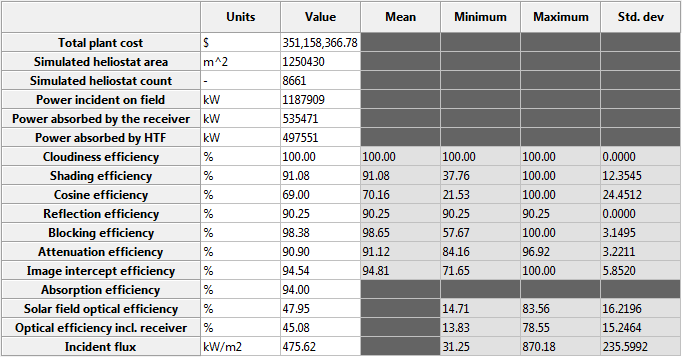
The values associated with each of the seventeen metrics are displayed in five columns. The columns are defined as follows:
The metrics are calculated according to the conventions described below. Note that the order of efficiency values corresponds to the order in which they are calculated by SolarPILOT. Each efficiency term is defined such that it represents the loss incurred after all previous losses are imposed.
The total plant cost is calculated on the Costs page and reported on the Simulation Results page. Please refer to the Costs page documentation for details on the calculation method.
This value is the total aperture area of all heliostats that are enabled and included in the layout for the most recent performance simulation.
This value is the number of heliostats that are enabled and included in the layout for the most recent performance simulation.
This value is the product of the Direct Normal Irradiation on the Performance Simulation page and the Simulated heliostat area as reported on the System Summary page.
This value is the power that is absorbed by the receiver absorber material after reflection losses but before thermal losses including convective, radiative, and piping losses are accounted for. The value is the product of Power incident on the field and Optical efficiency including receiver (defined below).
This value is the power that is absorbed by the heat transfer fluid after all optical and thermal losses (including convective, radiative, and piping losses) are accounted for.
Cloudiness efficiency is non-unity when the Simulate cloud transient option is enabled on the Performance Simulation page. Simulated clouds reduce the irradiance incident on affected heliostats, and the cloudiness efficiency represents the percentage of power that passes through the clouds and strikes the heliostats. The efficiency value accounts for potential differences in individual heliostat aperture area.
Shading efficiency represents the proportion of power lost due to heliostats casting shadows on neighbors, thereby preventing irradiance from reaching a portion of the affected heliostat(s).
SolarPILOT calculates shadowing and blocking using a vector projection and clipping method. Neighboring heliostats are tested for potential interference by projecting vectors from the heliostat corners along the direction of either the tower (blocking) or sun position (shadowing). If a projected vector intercepts an adjacent heliostat, blocking or shadowing are enforced according to the position of the interception. This method assumes that neighboring heliostats lie in parallel planes, which holds for all but very small solar fields in which tracking angles differ significantly between neighboring heliostats. This assumption results in the simplification that shadowed or blocked regions are rectangular, which simplifies the computation without affecting accuracy. Overlap of shadowing and blocking is neglected, so the blocking-shadowing efficiency is conservative.
The shadowing and blocking algorithm is as follows:
 . The subject is either the receiver (blocking scenario) or the sun (shadowing scenario).
. The subject is either the receiver (blocking scenario) or the sun (shadowing scenario).  is projected from the two top corners of K onto a plane containing J. The plane intersection points are tested for containment within J.
is projected from the two top corners of K onto a plane containing J. The plane intersection points are tested for containment within J. Cosine efficiency is calculated by taking the ratio of power incident on the aperture area of the heliostat field divided by the available power after cloudiness and shadowing losses. Cosine loss is evaluated for each heliostat by taking the dot product of the heliostat normal vector and the sun vector.
Reflection efficiency captures power loss after cloudiness, shadowing, and cosine efficiency, and includes both mirror soiling and reflectivity efficiency.
Blocking efficiency accounts for power loss due to light that is reflected from heliostats onto the back of adjacent heliostats. Blocking is calculated according to the algorithm described in the Shading efficiency section above.
Attenuation efficiency accounts for power loss during transmission of reflected light from the heliostats in the field to the receiver. Attenuation is caused by atmospheric scattering of light, in which light interacts with water vapor, dust, or other particulate matter and is reflected, refracted, or absorbed.
Image intercept efficiency accounts for light that is transmitted from the heliostat field to the position of the receiver but fails to intercept or impinge on the receiver aperture. This loss is also referred to as "spillage." Light that strikes non-absorbing surfaces such as oven boxes, refractory walls, or the tower structure, or light that misses the receiver system entirely is accounted for in this efficiency value.
SolarPILOT calculates intercept efficiency for each heliostat by taking the integral of the flux image function (the Hermite polynomial model) using Guassian quadrature. The intercept efficiency accounts for the user-selected heliostat aim point strategy.
Absorption efficiency accounts for losses due to light reflecting off of the surface of the receiver. Normally, this value is equal to the receiver surface absorptivity that you specify on the Receiver page(s).
This value represents the total optical efficiency of the solar field excluding receiver absorption efficiency. The solar field optical efficiency is equal to the product of all efficiency values except absorption efficiency.
This value represents the total optical efficiency of the solar field and receiver. The optical efficiency including receiver is equal to the product of all efficiency values.
The Incident flux indicates the intensity of reflected irradiation that is incident on the receiver after all losses, including receiver absorption efficiency. The number reported in the Value column indicates the mean flux intensity across the receiver aperture.
The SolTrace option on the Performance Simulation page produces results exemplified by the following table:
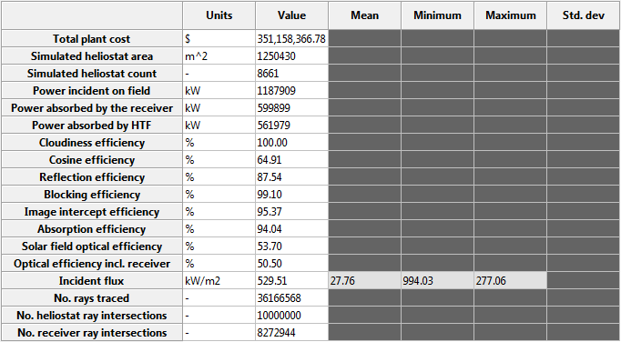
The values associated with each of the seventeen metrics are displayed in five columns. The columns are defined as follows:
The metrics are calculated according to the conventions described below.
The total plant cost is calculated on the Costs page and reported on the Simulation Results page. Please refer to the Costs page documentation for details on the calculation method.
This value is the total aperture area of all heliostats that are enabled and included in the layout for the most recent performance simulation.
This value is the number of heliostats that are enabled and included in the layout for the most recent performance simulation.
This value is the product of the Direct Normal Irradiation on the Performance Simulation page and the Simulated heliostat area as reported on the System Summary page.
This value is the power that is absorbed by the receiver absorber material after reflection losses but before thermal losses including convective, radiative, and piping losses are accounted for. The value is the product of Power incident on the field and Optical efficiency including receiver (defined below).
This value is the power that is absorbed by the heat transfer fluid after all optical and thermal losses (including convective, radiative, and piping losses) are accounted for.
Cloudiness efficiency is not considered for ray trace simulations.
Information from ray intersection data is insufficient to differentiate losses due to shading and losses due to cosine. The cosine efficiency includes both shading and cosine effects in the reported efficiency value.
Cosine efficiency is calculated by taking the ratio of the number of rays that hit a heliostat within the field to the number of rays cast within the bounding box of the heliostat field. This value is converted to an efficiency by dividing by the solar field aperture area.
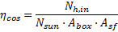
where:
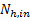 |
Number of rays that hit the heliostat field |
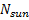 |
Number of rays cast by the sun within the bounding box |
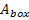 |
The area of the bounding box containing all heliostats |
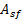 |
The total solar field aperture area |
Reflection efficiency includes both mirror soiling and reflectivity efficiency. It is calculated as follows:
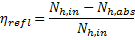
where:
Number of rays that hit the heliostat field |
|
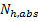 |
Number of rays that are absorbed upon first interaction with the heliostat stage. |
Blocking efficiency accounts for power loss due to light that is reflected from heliostats onto the back of adjacent heliostats. Blocking is calculated by tracking rays that are absorbed within the heliostat stage on a second stage interaction.
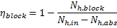
where:
Number of rays that hit the heliostat field |
|
Number of rays that are absorbed upon first interaction with the heliostat stage. |
|
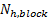 |
Number of rays that are absorbed within the heliostat stage on a second stage interaction. |
Attenuation efficiency is not currently modeled by the SolTrace engine.
Image intercept efficiency accounts for light that is transmitted from the heliostat field to the position of the receiver but fails to intercept or impinge on the receiver aperture. This loss is also referred to as "spillage." Light that strikes non-absorbing surfaces such as oven boxes, refractory walls, or the tower structure, or light that misses the receiver system entirely is accounted for in this efficiency value.
SolarPILOT calculates intercept efficiency for the SolTrace engine as follows:
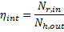
where:
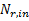 |
Number of rays that hit the receiver aperture (but not necessarily absorbed by the receiver) |
|
Number of rays that leave the heliostat stage after accounting for cosine, reflection, and blocking losses. |
Absorption efficiency accounts for losses due to light reflecting off of the surface of the receiver. Normally, this value is approximately equal to the receiver surface absorptivity that you specify on the Receiver page(s). Because SolTrace uses a probabilistic Monte-Carlo approach, the absorption efficiency may not exactly equal the specified value, but will converge to the specified value with increasing number of simulated rays.
Absorption efficiency is calculated as follows:
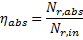
where:
Number of rays that hit the receiver aperture (but not necessarily absorbed by the receiver) |
|
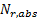 |
Number of rays that are absorbed upon interaction with the receiver. |
This value represents the total optical efficiency of the solar field excluding receiver absorption efficiency. The solar field optical efficiency is equal to the quotient of the number of rays incident on the receiver and the number of rays incident on the heliostat field.
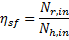
where:
Number of rays that hit the receiver aperture (but not necessarily absorbed by the receiver) |
|
Number of rays that hit the heliostat field |
This value represents the total optical efficiency of the solar field and receiver. The optical efficiency including receiver is approximately equal to the product of all efficiency values, and is is equal to the quotient of the number of rays absorbed by the receiver and the number of rays incident on the heliostat field.

where:
Number of rays that are absorbed upon interaction with the receiver. |
|
Number of rays that hit the heliostat field |
The Incident flux indicates the intensity of reflected irradiation that is incident on the receiver after all losses, including receiver absorption efficiency. The number reported in the Value column indicates the mean flux intensity across the receiver aperture.
The number of rays traced within the bounding box of the heliostat field.
The number of rays that hit the heliostats within the heliostat field. Equal to:
The number of rays that hit the receiver aperture. Equal to:
When executing a parametric simulation, the results table displays metrics resulting from each evaluation. The contents of the table mimic the Flux simulation results summary (Hermite Analytical Simulation), although several notable differences are outlined below. The following table provides an example of the results summary for a parametric simulation.
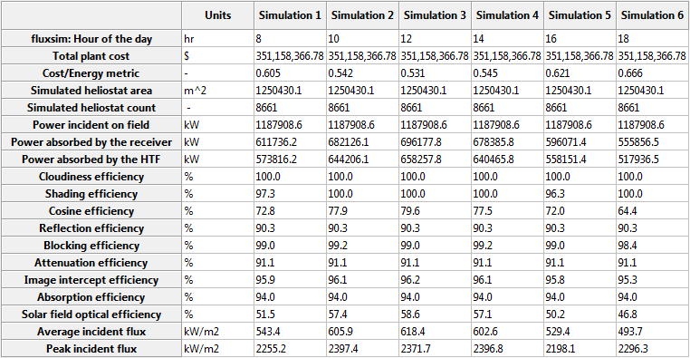
Additional table contents are as follows:
The Cost/Energy metric is an indicator of the ratio of plant cost to energy produced by the field. This metric should not be interpreted as levelized cost of energy or as an indication of plant economic viability. It is a useful metric for comparing multiple fields, or multiple layout configurations within a particular case.
The Cost/Energy metric is calculated by taking the ratio of total plant cost and a summation of the energy produced in the most recent layout or performance calculation. For example, during a layout calculation, field performance is calculated at hourly intervals over four representative days. The total energy produced by the heliostats included in the final layout over all calculation hours and days serves as the denominator in this ratio. If a performance simulation has been executed, the Cost/Energy metric is updated to reflect the energy produced during the most recent calculation.
The values from the parametric simulation that you specify are reproduced in rows of the table. The row label entails the group to which the variable belongs (one of heliostat, receiver, solarfield, land, ambient, fluxsim, financial, optimize).
The average incident flux is the mean observed flux intensity incident on the receiver aperture.
The peak incident flux is the maximum observed flux intensity incident on the receiver aperture.